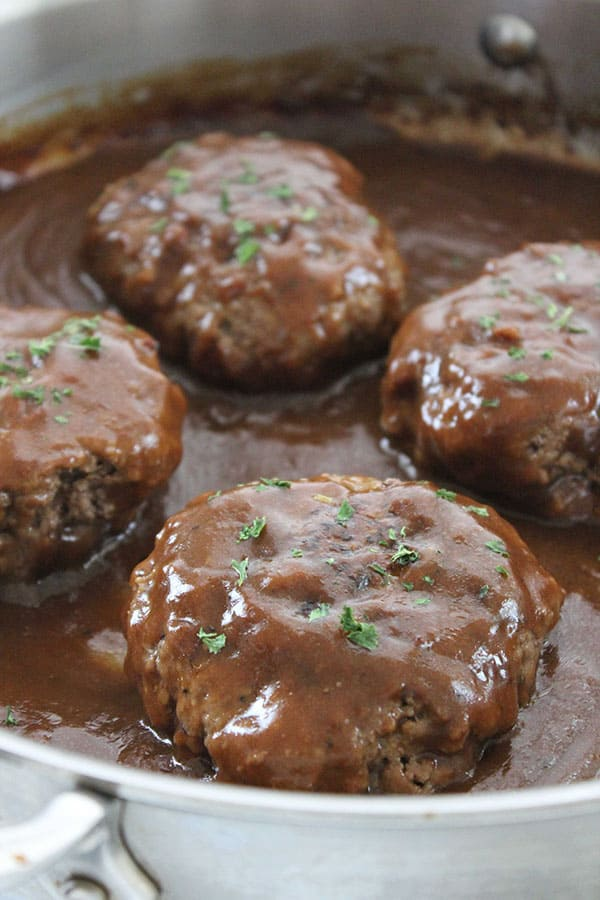

salisbury-steak

Description
Salisbury steak is a variation of the Hamburg steak, which is an ancestor of the hamburger. Salisbury steaks are usually made from a blend of ground beef and other ingredients, then topped with a thick brown gravy. The dish is named after James H. Salisbury, a doctor who promoted a meat-centered diet.
Salisbury Steak is a perfect weeknight recipe to serve the family. Plate up with mashed potatoes or tasty veggies for the best comfort food!
Ingredients
- 1 ½ pounds ground beef
- 1 (10.5 ounce) can condensed French onion soup
- ½ cup dry bread crumbs
- 1 egg
- ¼ teaspoon salt
- ⅛ teaspoon ground black pepper
- 1 tablespoon all-purpose flour
- ¼ cup ketchup
- ¼ cup water
- 1 tablespoon Worcestershire sauce
- ½ teaspoon mustard powder
Steps
- Combine ground beef, 1/3 cup condensed soup, bread crumbs, egg, salt, and black pepper in a large bowl. Shape into 6 oval patties.
- Heat a large skillet over medium-high heat; add patties and brown on both sides. Drain excess fat.
- Blend remaining soup and flour together in a small bowl until smooth; mix in ketchup, water, Worcestershire sauce, and mustard. Pour soup mixture over patties in the skillet. Cover, and cook for 20 minutes, stirring occasionally.
Reference:
https://www.allrecipes.com/recipe/14595/salisbury-steak/